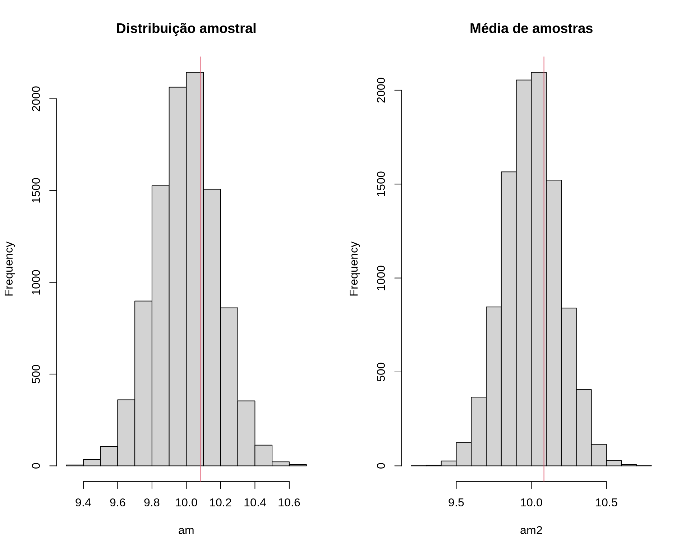
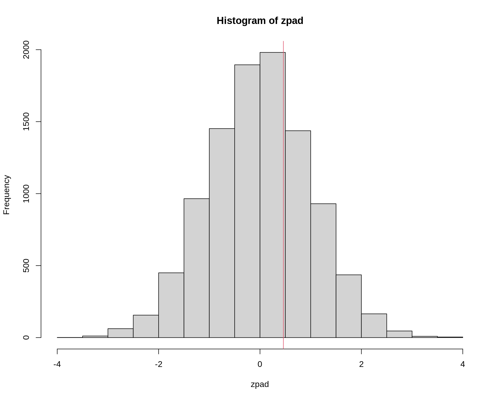
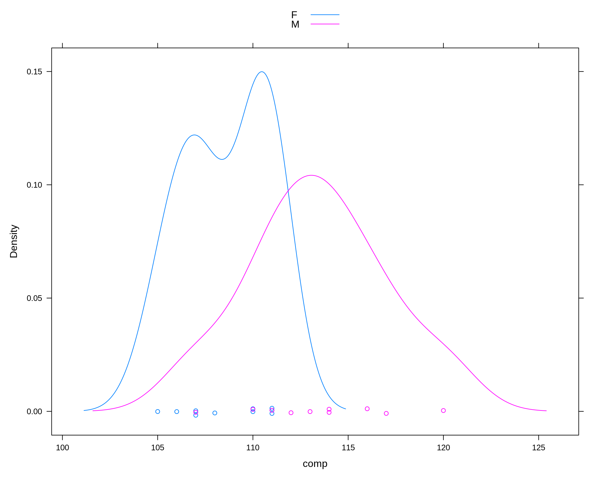

Métodos de Monte Carlo em inferência estatística
Testes de hipótese de Monte Carlo
Fernando P. Mayer
1 Introdução
fortunes::fortune(264)#
# Soham: How to compute the p-value of a statistic generally?
# Berton Gunter: runif(1)
# -- Soham and Berton Gunter
# R-help (May 2010)Besag and Clifford (1989) definiram que um teste de Monte Carlo generalizado é um que possui as seguintes características:
- Um conjunto de dados observado, é apenas um entre muitos conjuntos que poderiam ter ocorrido
- Todos os possíveis conjuntos de dados podem ser gerados a partir de uma série de mudanças incrementais nos dados (randomização)
- Aqui vamos assumir que todos os possíveis conjuntos de dados podem ser gerados a partir de algum modelo probabilístico (Monte Carlo)
- A hipótese nula de interesse afirma que todos os possíveis conjuntos de dados possuem a mesma probabilidade de ocorrência
- Todo conjunto de dados possível pode ser resumido por alguma estatística de teste \(S\)
- Um teste de hipótese consiste em calcular uma medida (estatística de teste) e verificar o quanto ela é provável dentro do cenário de ocorrências puramente ao acaso, supondo que a hipótese nula é verdadeira.
- Se a conclusão for de que é um valor dos mais prováveis, então não existem evidências para rejeitar a hipótese nula.
- Se for dos resultados mais extremos, então existem evidências de que a hipótese nula não é verdadeira
Partindo dessa ideia, um teste de hipótese de Monte Carlo pode ser formulado da seguinte maneira:
- Calcule a estatística de teste para a amostra
- Supondo que a hipótese nula é verdadeira, simule valores com as mesmas características do modelo probabilístico sendo testado (sob \(H_0\))
- Repita o passo (2) um número \(N\) grande de vezes, e calcule a estatística de teste em todos os passos
- Com a distribuição dos \(N\) valores da estatística de teste (supondo \(H_0\)) verdadeira, calcule a proporção de valores iguais ou mais extremos que a estatística de teste da amostra
- O último passo pode ser interpretado como o \(p\)-valor de Monte Carlo, ou \(p\)-valor empírico.
- Proporções altas mostram que a estatística de teste amostral não é tão extrema, o que favorece \(H_0\)
- Proporções baixas indicam que a estatística de teste é extrema (pouca probabilidade de ocorrer simplesmente ao acaso), por isso a hipótese nula deve ser pouco plausível
2 Procedimento padrão
Procedimentos gerais para um teste de hipótese
- Definir a hipótese nula (\(H_0\)) e a alternativa (\(H_a\)).
- Definir um nível de significância \(\alpha\), que irá determinar o nível de confiança \(100(1 - \alpha)\)% do teste.
- Definir o tipo de teste, com base na hipótese alternativa.
- Calcular a estatística de teste, com base na distribuição amostral do estimador do parâmetro sob teste \(\rightarrow\) valor calculado.
- Determinar a região crítica (região de rejeição), com base no nível. de significância \(\alpha\) \(\rightarrow\) valor crítico.
- Concluir o teste.
Erros de decisão
Para entendermos o que é o nível de significância \((\alpha)\), precisamos saber que, ao realizar um teste de hipótese, estamos sujeitos a dois tipos de erros.
- Erro Tipo I: rejeitar \(H_0\), quando \(H_0\) é verdadeira (falso negativo).
- Erro Tipo II: não rejeitar \(H_0\), quando \(H_0\) é falsa (falso positivo).
| \(H_0\) verdadeira | \(H_0\) falsa | |
|---|---|---|
| Não rejeitar \(H_0\) | Decisão correta | Erro tipo II |
| Rejeitar \(H_0\) | Erro tipo I | Decisão correta |
Definimos por \(\alpha\) e \(\beta\) as probabilidades de cometer os erros do tipo I e II:
- \(\alpha = \text{P}(\text{erro tipo I}) = \text{P}(\text{rejeitar } H_0 \, | \, H_0 \text{ verdadeira})\).
- \(\beta = \text{P}(\text{erro tipo II}) = \text{P}(\text{não rejeitar } H_0 \, | \, H_0 \text{ falsa})\).
- \(\alpha\) é o nível de significância do teste.
- \(1 - \alpha\) é o nível de confiança do teste.
Nível descritivo
- Em geral, \(\alpha\) é pré-fixado para construir a regra de decisão.
- Uma alternativa é deixar em aberto a escolha de \(\alpha\) para quem for tomar a decisão.
- A ideia é calcular, supondo que a hipótese nula é verdadeira, a probabilidade de se obter estimativas iguais ou mais extremas do que aquela fornecida pela amostra.
- Essa probabilidade é chamada de nível descritivo, denotada por \(\alpha^*\) (ou \(p\)-valor).
- Valores pequenos de \(\alpha^*\) evidenciam que a hipótese nula é falsa.
- O conceito de “pequeno” fica para quem decide qual \(\alpha\) deve usar para comparar com \(\alpha^*\).
Para testes unilaterais, sendo \(H_0: \mu = \mu_0\), a expressão de \(\alpha^*\) depende da hipótese alternativa:
\[\begin{align*} \alpha^* &= P(\bar{X} < \bar{x}_{obs} \, | \, H_0 \text{ verdadeira}) \quad \text{para } H_a: \mu < \mu_0 \\ \alpha^* &= P(\bar{X} > \bar{x}_{obs} \, | \, H_0 \text{ verdadeira}) \quad \text{para } H_a: \mu > \mu_0 \end{align*}\]
Para testes bilaterais, temos \(H_0: \mu = \mu_0\) contra \(H_0: \mu \neq \mu_0\), a definição do nível descritivo depende da relação entre \(\bar{x}_{obs}\) e \(\mu_0\):
\[\begin{align*} \alpha^* &= 2 \times P(\bar{X} < \bar{x}_{obs} \, | \, H_0 \text{ verdadeira}) \quad \text{se } \bar{x}_{obs} < \mu_0 \\ \alpha^* &= 2 \times P(\bar{X} > \bar{x}_{obs} \, | \, H_0 \text{ verdadeira}) \quad \text{se } \bar{x}_{obs} > \mu_0 \\ \end{align*}\]
Como estamos calculando a probabilidade para apenas uma das caudas, então esse valor é multiplicado por 2.
3 Teste de hipótese para a média
3.1 Variância conhecida
Quando a variância populacional é conhecida, a distribuição amostral da média é \(\bar{X} \sim \text{N}(\mu, \sigma^2 / n)\) e a estatística de teste é
\[ z = \frac{\bar{x} - \mu_0}{\sigma/\sqrt{n}} \sim \text{N}(0,1) \]
Suponha que uma amostra de \(n=30\) valores foram obtidos de uma VA \(X \sim \text{N}(10, 1)\) e deseja-se testar as hipóteses
\[ \begin{align*} H_0 &: \mu = 10 \\ H_a &: \mu \neq 10 \end{align*} \]
com \(\alpha=0.05\).
## Simula X ~ N(10, 1)
set.seed(2019-10-29)
n <- 30
x <- rnorm(n, 10, 1)
(med <- mean(x))# [1] 10.08421(s2 <- var(x))# [1] 1.158774## Teste padrão para
## H0: mu = 10
## Ha: mu != 10
mu0 <- 10
## Estatistica de teste
(zcalc <- (med - mu0)/sqrt(1/n))# [1] 0.4612242## Valor critico
(zcrit <- qnorm(.025, mean = 0, sd = 1))# [1] -1.959964## p-valor
2 * pnorm(zcalc, mean = 0, sd = 1, lower.tail = FALSE)# [1] 0.6446378## Direto, com base na distribuição amostral
2 * pnorm(med, mean = 10, sd = 1/sqrt(n), lower.tail = FALSE)# [1] 0.6446378## Usando simulacao de Monte Carlo
N <- 1e4
## Simulando direto da distribuicao amostral, sob H0
am <- rnorm(N, mean = mu0, sd = 1/sqrt(n))
## Simula da populacao e calcula as medias, sob H0
am2 <- replicate(N, mean(rnorm(n, mu0, 1)))
## Visualização
par(mfrow = c(1, 2))
hist(am, main = "Distribuição amostral")
abline(v = med, col = 2)
hist(am2, main = "Média de amostras")
abline(v = med, col = 2)
par(mfrow = c(1, 1))
## p-valor empírico
2 * sum(am >= med)/N# [1] 0.63362 * sum(am2 >= med)/N# [1] 0.646## Padroniza a distribuição para N(0,1)
zpad <- (am - mu0)/sqrt(1/n)
hist(zpad)
abline(v = zcalc, col = 2)
## p-valor empírico
2 * sum(zpad >= zcalc)/N# [1] 0.63363.2 Variância desconhecida
Quando a variância populacional é desconhecida, a distribuição amostral da média é \(\bar{X} \sim \text{N}(\mu, s^2 / n)\) e a estatística de teste é
\[ t = \frac{\bar{x} - \mu_0}{s/\sqrt{n}} \sim t_{(n-1)} \]
Suponha que uma amostra de \(n=30\) valores foram obtidos de uma VA \(X \sim \text{N}(10, 1)\). Na prática não saberemos o verdadeiro valor de \(\sigma^2\), por isso usaremos a variância amostral \(s^2\) no lugar de \(\sigma^2\). Assim, deseja-se testar as hipóteses
\[ \begin{align*} H_0 &: \mu = 10 \\ H_a &: \mu \neq 10 \end{align*} \]
com \(\alpha=0.05\).
## Simula de N(10, 1), mas agora asumindo que a variância é desconhecida
set.seed(2019-10-29)
n <- 30
x <- rnorm(n, 10, 1)
(med <- mean(x))# [1] 10.08421(s2 <- var(x))# [1] 1.158774## Teste padrão para
## H0: mu = 10
## Ha: mu != 10
mu0 <- 10
t.test(x = x, alternative = "two.sided", mu = mu0)#
# One Sample t-test
#
# data: x
# t = 0.42846, df = 29, p-value = 0.6715
# alternative hypothesis: true mean is not equal to 10
# 95 percent confidence interval:
# 9.68225 10.48617
# sample estimates:
# mean of x
# 10.08421## Estatística de teste
(tcalc <- (med - mu0)/sqrt(s2/n))# [1] 0.4284624## Valor crítico
(tcrit <- qt(.025, df = n - 1))# [1] -2.04523## p-valor
2 * pt(tcalc, df = n - 1, lower.tail = FALSE)# [1] 0.6714802## Teste por simulação de Monte Carlo
N <- 1e4
## Simula direto da distribuição amostral da média
am <- rnorm(N, mean = mu0, sd = sqrt(s2/n))
## Calcula média de amostras de tamanho n da população, com a variância
## estimada a partir dos dados
am2 <- replicate(N, mean(rnorm(n, mu0, sqrt(s2))))
## Visualização
par(mfrow = c(1, 2))
hist(am, main = "Distribuição amostral")
abline(v = med, col = 2)
hist(am2, main = "Média de amostras")
abline(v = med, col = 2)par(mfrow = c(1, 1))
## p-valor empírico
2 * sum(am >= med)/N# [1] 0.65662 * sum(am2 >= med)/N# [1] 0.6678## Padroniza a distribuição para t(n - 1)
tpad <- (am - mu0)/sqrt(s2/n)
hist(tpad)
abline(v = tcalc, col = 2)## p-valor empírico
2 * sum(tpad >= tcalc)/N# [1] 0.65663.3 Comparação de duas médias (variâncias iguais)
Considere duas populações \(X_1\) e \(X_2\) com médias \(\mu_1\) e \(\mu_2\), e desvios-padrão \(\sigma_1\) e \(\sigma_2\), ou seja \[ X_1 \sim \text{N}(\mu_1, \sigma_1^2) \qquad\text{e}\qquad X_2 \sim \text{N}(\mu_2, \sigma_2^2). \]
A “nova” variável \(\overline{X}_d = (\overline{X}_1 - \overline{X}_2)\) também possui distribuição normal com
\[ \begin{aligned} \text{E}(\overline{X}_1 - \overline{X}_2) &= \mu_1 - \mu_2 \\ \text{V}(\overline{X}_1 - \overline{X}_2) &= \text{V}(\overline{X}_1) + \text{V}(\overline{X}_2) \\ &= \frac{\sigma^2_1}{n_1} + \frac{\sigma^2_2}{n_2}, \end{aligned} \]
ou seja, a distribuição amostral da diferença de médias é
\[ \overline{X}_d = (\overline{X}_1 - \overline{X}_2) \sim \text{N}\left(\mu_1 - \mu_2, \frac{\sigma^2_1}{n_1} + \frac{\sigma^2_2}{n_2}\right). \]
Quando a variância populacional é desconhecida, utilizamos \(s^2\) como estimativa para \(\sigma^2\), e pode-se considerar dois casos distintos
- Variâncias iguais: quando é razoável supor que as variâncias populacionais são iguais, ou seja \(\sigma_1^2 = \sigma_2^2\). Nesse caso a distribuição amostral da diferença média é \[ \overline{X}_d = (\overline{X}_1 - \overline{X}_2) \sim \text{N}\left(\mu_1 - \mu_2, \frac{s^2}{n_1} + \frac{s^2}{n_2}\right) \] onde \(s^2\) é média ponderada das variâncias amostrais \[ s^2 = \frac{(n_1 - 1) \cdot s_1^2 + (n_2 - 1) \cdot s_2^2}{n_1 + n_2 - 2} \]
- Variâncias diferentes: quando não se pode fazer nenhuma suposição sobre a igualdade das variâncias populacionais, ou seja \(\sigma_1^2 \neq \sigma_2^2\). Nesse caso a distribuição amostral da diferença média é \[ \overline{X}_d = (\overline{X}_1 - \overline{X}_2) \sim \text{N}\left(\mu_1 - \mu_2, \frac{s^2_1}{n_1} + \frac{s^2_2}{n_2}\right) \] onde \(s^2_1\) e \(s^2_2\) são as variâncias de cada amostra (na estatística de teste os graus de liberdade precisam ser ajustados corretamente).
3.3.1 Exemplo (chacais)
O exemplo abaixo é uma adaptação de um exemplo clássico analisado por Manly (2006). Os dados se referem ao comprimento das mandíbulas de 20 exemplares de chacais (10 de cada sexo) disponíveis no Museu de História Natural Britânico.
Considere que \(\mu_1\) seja a média populacional dos comprimentos das mandíbulas de chacaias machos, e que \(\mu_2\) se refere às fêmeas. Os pesquisadores supõem que as mandíbulas dos machos são, em média, maiores que as das fêmeas. Dessa forma um teste de hipótese pode ser formulado com as seguintes hipóteses
\[ \begin{align*} H_0 &: \mu_1 - \mu_2 = 0 \Rightarrow \mu_1 = \mu_2 \\ H_a &: \mu_1 - \mu_2 > 0 \Rightarrow \mu_1 > \mu_2 \end{align*} \]
As variâncias populacionais são desconhecidas, mas assume-se que sejam iguais, portanto a estatística de teste é
\[ t = \frac{(\overline{x}_1 - \overline{x}_2) - (\mu_1 - \mu_2)}{ \displaystyle\sqrt{\frac{s^2}{n_1} + \displaystyle\frac{s^2}{n_2}}} = \frac{\overline{x}_1 - \overline{x}_2}{ \displaystyle\sqrt{\frac{s^2}{n_1} + \displaystyle\frac{s^2}{n_2}}} \sim t_\nu, \]
onde
\[ s^2 = \frac{(n_1 - 1) \cdot s_1^2 + (n_2 - 1) \cdot s_2^2} {n_1 + n_2 - 2} \] e \[ \nu = n_1 + n_2 - 2 \] são os graus de liberdade.
## Exemplo adaptado de Manly (1997)
## Comparação do comprimento da mandíbula de chacais machos e fêmeas
set.seed(2)
machos <- c(120, 107, 110, 116, 114, 111, 113, 117, 114, 112)
## Simula diferença para as femeas
femeas <- rnorm(10, mean(machos) - 2, sd = sd(machos))
da <- data.frame(comp = c(machos, femeas),
sexo = c(rep("M", 10), rep("F", 10)))
densityplot(~comp, groups = sexo, data = da, auto.key = TRUE)
## Média por sexo
tapply(da$comp, da$sexo, mean)# F M
# 112.185 113.400## Diferença das médias
diff(tapply(da$comp, da$sexo, mean))# M
# 1.214975Procedimento padrão
## Teste F para igualdade de variâncias
var.test(x = machos, y = femeas)#
# F test to compare two variances
#
# data: machos and femeas
# F = 1.0307, num df = 9, denom df = 9, p-value = 0.9648
# alternative hypothesis: true ratio of variances is not equal to 1
# 95 percent confidence interval:
# 0.2560149 4.1496511
# sample estimates:
# ratio of variances
# 1.030715## Média de cada sexo
(m1 <- mean(machos))# [1] 113.4(m2 <- mean(femeas))# [1] 112.185## Diferença entre as médias amostrais
(med.amostral <- m1 - m2)# [1] 1.214975## Calcula o desvio padrão ponderado
n1 <- length(machos)
v1 <- var(machos)
n2 <- length(femeas)
v2 <- var(femeas)
(s.pond <- sqrt(((n1 - 1) * v1 + (n2 - 1) * v2)/(n1 + n2 - 2)))# [1] 3.690024## Teste de hipótese para
## H0: mu1 = mu2
## Ha: mu1 > mu2
mu0 <- 0
t.test(x = machos, y = femeas, alternative = "greater",
var.equal = TRUE, mu = mu0)#
# Two Sample t-test
#
# data: machos and femeas
# t = 0.73625, df = 18, p-value = 0.2355
# alternative hypothesis: true difference in means is greater than 0
# 95 percent confidence interval:
# -1.646627 Inf
# sample estimates:
# mean of x mean of y
# 113.400 112.185## Estatística de teste
(tcalc <- (m1 - m2)/(s.pond * sqrt(1/n1 + 1/n2)))# [1] 0.7362465## Valor crítico
(tcrit <- qt(.025, df = n1 + n2 - 2, lower.tail = FALSE))# [1] 2.100922## p-valor
pt(tcalc, df = n1 + n2 - 2, lower.tail = FALSE)# [1] 0.2355338Usando simulação de Monte Carlo
## Teste por simulação de Monte Carlo
N <- 1e4
## Simula direto da distribuição amostral
am <- replicate(N, rnorm(1, mu0, s.pond * sqrt(1/n1 + 1/n2)))Para simular direto dos dados, partimos da hipótese nula de que as duas médias são iguais, e as variâncias são as mesmas. Nesse caso, podemos simular assumindo que a média é igual à média dos machos, e da mesma forma, podemos assumir que a média da população é igual a média das fêmeas.
## Usando media dos machos: obtém a diferença das médias entre machos e
## fêmeas, assumindo que a média na população é igual a média dos machos
am.machos <- replicate(
N, diff(tapply(rnorm(20, m1, s.pond), da$sexo, mean))
)
## Usando media das femeas: obtém a diferença das médias entre machos e
## fêmeas, assumindo que a média na população é igual a média dos fêmeas
am.femeas <- replicate(
N, diff(tapply(rnorm(20, m2, s.pond), da$sexo, mean))
)
## Visualização
par(mfrow = c(1, 3))
hist(am, main = "Distribuição amostral")
abline(v = med.amostral, col = 2)
hist(am.machos, main = "Média de amostras (machos)")
abline(v = med.amostral, col = 2)
hist(am.femeas, main = "Média de amostras (fêmeas)")
abline(v = med.amostral, col = 2)par(mfrow = c(1, 1))
## p-valor empírico
sum(am >= med.amostral)/N# [1] 0.2342sum(am.machos >= med.amostral)/N# [1] 0.225sum(am.femeas >= med.amostral)/N# [1] 0.2361## Padroniza a distribuição para t(n1 + n2 - 2)
tpad <- (am - mu0)/(s.pond * sqrt(1/n1 + 1/n2))
hist(tpad)
abline(v = tcalc, col = 2)## p-valor
sum(tpad >= tcalc)/N# [1] 0.2342Quando o método pode não ser muito bom
Aqui usamos os dados originais de Manly (2006).
## Exemplo original do Manly (1997)
machos <- c(120, 107, 110, 116, 114, 111, 113, 117, 114, 112)
femeas <- c(110, 111, 107, 108, 110, 105, 107, 106, 111, 111)
da <- data.frame(comp = c(machos, femeas),
sexo = c(rep("M", 10), rep("F", 10)))
densityplot(~comp, groups = sexo, data = da, auto.key = TRUE)
## Média por sexo
tapply(da$comp, da$sexo, mean)# F M
# 108.6 113.4## Diferença das médias
diff(tapply(da$comp, da$sexo, mean))# M
# 4.8## Média de cada sexo
(m1 <- mean(machos))# [1] 113.4(m2 <- mean(femeas))# [1] 108.6## Diferença entre as médias amostrais
(med.amostral <- m1 - m2)# [1] 4.8## Calcula o desvio padrão ponderado
n1 <- length(machos)
v1 <- var(machos)
n2 <- length(femeas)
v2 <- var(femeas)
(s.pond <- sqrt(((n1 - 1) * v1 + (n2 - 1) * v2)/(n1 + n2 - 2)))# [1] 3.080404## Teste F para igualdade de variâncias
var.test(x = machos, y = femeas)#
# F test to compare two variances
#
# data: machos and femeas
# F = 2.681, num df = 9, denom df = 9, p-value = 0.1579
# alternative hypothesis: true ratio of variances is not equal to 1
# 95 percent confidence interval:
# 0.665931 10.793829
# sample estimates:
# ratio of variances
# 2.681034## Teste de hipótese para
## H0: mu1 = mu2
## Ha: mu1 > mu2
mu0 <- 0
t.test(x = machos, y = femeas, alternative = "greater",
var.equal = TRUE, mu = mu0)#
# Two Sample t-test
#
# data: machos and femeas
# t = 3.4843, df = 18, p-value = 0.001324
# alternative hypothesis: true difference in means is greater than 0
# 95 percent confidence interval:
# 2.411156 Inf
# sample estimates:
# mean of x mean of y
# 113.4 108.6## Estatística de teste
(tcalc <- (m1 - m2)/(s.pond * sqrt(1/n1 + 1/n2)))# [1] 3.484324## Valor crítico
(tcrit <- qt(.025, df = n1 + n2 - 2, lower.tail = FALSE))# [1] 2.100922## p-valor
pt(tcalc, df = n1 + n2 - 2, lower.tail = FALSE)# [1] 0.001323634## Teste por simulação de Monte Carlo
N <- 1e5 # NOTE o aumento no número de simulações
## Simula direto da distribuição amostral
library(future.apply) # para um replicate mais eficiente (em paralelo)# Loading required package: futureplan(multicore, workers = 4)
am <- future_replicate(N, rnorm(1, mu0, s.pond * sqrt(1/n1 + 1/n2)))
## Usando media dos machos
am.machos <- future_replicate(
N, diff(tapply(rnorm(20, m1, s.pond), da$sexo, mean))
)
## Usando media das femeas
am.femeas <- future_replicate(
N, diff(tapply(rnorm(20, m2, s.pond), da$sexo, mean))
)
## Visualização
par(mfrow = c(1, 3))
hist(am, main = "Distribuição amostral")
abline(v = med.amostral, col = 2)
hist(am.machos, main = "Média de amostras (machos)")
abline(v = med.amostral, col = 2)
hist(am.femeas, main = "Média de amostras (fêmeas)")
abline(v = med.amostral, col = 2)par(mfrow = c(1, 1))
## p-valor empírico
format(sum(am >= med.amostral)/N, digits = 10, scientific = FALSE)# [1] "0.00023"format(sum(am.machos >= med.amostral)/N, digits = 10, scientific = FALSE)# [1] "0.00019"format(sum(am.femeas >= med.amostral)/N, digits = 10, scientific = FALSE)# [1] "0.00019"## Padroniza a distribuição para t(n1 + n2 - 2)
tpad <- (am - mu0)/(s.pond * sqrt(1/n1 + 1/n2))
hist(tpad)
abline(v = tcalc, col = 2)## p-valor
sum(tpad >= tcalc)/N# [1] 0.00023Isso mostra que a simulação pode não conseguir representar casos extremos, embora a conclusão não seria alterada.
4 Teste de hipótese para uma proporção
Se \(Y \sim \text{Ber}(p)\), então a proporção amostral \[ \hat{p} = \frac{1}{n} \sum_{i=1}^{n} y_i \] é a melhor estimativa para a proporção populacional \(p\).
Já vimos que, quando ambas condições são satisfeitas,
- \(np \geq 5\)
- \(n(1 - p) \geq 5\),
a distribuição amostral de \(\hat{p}\) pode ser aproximada (pelo TLC) por \[ \hat{p} \overset{\text{aprox}}{\sim} \text{N}\left(p, \frac{p(1 - p)}{n} \right). \]
Podemos usar a distribuição Normal como aproximação da Binomial e, portanto, usamos a estatística de teste \[ z = \frac{\hat{p} - p_0}{\sqrt{\frac{p_0 (1 - p_0)}{n}}} \sim \text{N}(0, 1) \] em que \(p_0\) é o valor de proporção de teste na hipótese nula.
4.1 Exemplo
Suponha que em uma amostra de \(n=250\) itens, 32 apresentaram algum tipo de defeito. Deseja-se testas as hipóteses
\[ \begin{align*} H_0 &: p = 0.15\\ H_a &: p < 0.15 \end{align*} \]
## Dados: y = 32 sucessos em n = 250 tentativas
n <- 250
y <- 32
## Proporção amostral
(theta.hat <- y/n)# [1] 0.128## Teste de hipótese
## H0: theta = 0.15
## Ha: theta < 0.15
theta0 <- 0.15
## A aproximação pela normal funciona bem quando
## np >= 5 e n(1-p) >=5
n * theta.hat# [1] 32n * (1 - theta.hat)# [1] 218## Estatistica de teste (aproximação pela normal)
(zcalc <- (theta.hat - theta0)/sqrt((theta0 * (1 - theta0))/n))# [1] -0.9741764## Com alpha = 0.05, o valor cítico é
(zcrit <- qnorm(.05))# [1] -1.644854## p-valor
pnorm(zcalc)# [1] 0.1649845pbinom(y, size = n, prob = theta0) # teste exato# [1] 0.1890489binom.test(x = 32, n = 250, p = 0.15, alternative = "less")#
# Exact binomial test
#
# data: 32 and 250
# number of successes = 32, number of trials = 250, p-value = 0.189
# alternative hypothesis: true probability of success is less than 0.15
# 95 percent confidence interval:
# 0.0000000 0.1680901
# sample estimates:
# probability of success
# 0.128## Aproximação (com correção de continuidade)
prop.test(x = 32, n = 250, p = 0.15, alternative = "less")#
# 1-sample proportions test with continuity correction
#
# data: 32 out of 250, null probability 0.15
# X-squared = 0.78431, df = 1, p-value = 0.1879
# alternative hypothesis: true p is less than 0.15
# 95 percent confidence interval:
# 0.0000000 0.1689838
# sample estimates:
# p
# 0.128## Aproximação (SEM correção de continuidade): similar à aproximação
## pela Normal
prop.test(x = 32, n = 250, p = 0.15, alternative = "less",
correct = FALSE)#
# 1-sample proportions test without continuity correction
#
# data: 32 out of 250, null probability 0.15
# X-squared = 0.94902, df = 1, p-value = 0.165
# alternative hypothesis: true p is less than 0.15
# 95 percent confidence interval:
# 0.0000000 0.1667801
# sample estimates:
# p
# 0.128## Teste por simulação de Monte Carlo
N <- 1e4
## Simula direto da distribuição amostral da proporção (aproximada pela
## normal)
am <- rnorm(N, mean = theta0, sd = sqrt((theta0 * (1 - theta0))/n))
## Simula direto da população, sob theta0
am2 <- rbinom(N, size = n, prob = theta0)
## Calcula a proporção amostral
am2 <- am2/n
## Visualização
par(mfrow = c(1, 2))
hist(am, main = "Distribuição amostral", freq = FALSE)
## Aproximação pela normal
curve(dnorm(x, theta0, sqrt((theta0 * (1 - theta0))/n)),
from = 0, to = .3, add = TRUE, col = 2)
abline(v = theta.hat, col = 2)
hist(am2, main = "Proporções de amostras", freq = FALSE)
## Aproximação pela normal
curve(dnorm(x, theta0, sqrt((theta0 * (1 - theta0))/n)),
from = 0, to = .3, add = TRUE, col = 2)
abline(v = theta.hat, col = 2)par(mfrow = c(1, 1))
## p-valor empírico
sum(am <= theta.hat)/N# [1] 0.1671sum(am2 <= theta.hat)/N # mais próximo ao teste exato# [1] 0.1871## Padroniza a distribuição para N(0,1)
zpad <- (am - theta0)/sqrt((theta0 * (1 - theta0))/n)
hist(zpad, freq = FALSE)
curve(dnorm, -3, 3, add = TRUE, col = 2)
abline(v = zcalc, col = 2)## p-valor empírico
sum(zpad <= zcalc)/N# [1] 0.16715 Cálculo da taxa empírica do erro do tipo I
## Obtém o valor da estatística t do teste de Student para a média de
## uma população. Assume que a distribuição de X seja normal.
simula0 <- function(n, mu0, sig0){
X <- rnorm(n, mean=mu0, sd=sig0)
T <- (mean(X)-mu0)/(sqrt(var(X)/n))
return(T)
}
simula0(n=10, mu0=0, sig0=1)# [1] 0.1239222t <- replicate(10000, simula0(n=10, mu0=0, sig0=1))
## Comparação por distribuições acumuladas.
par(mfrow = c(1, 2))
plot(ecdf(t), xlim=c(-5, 5))
curve(pt(x, df=10-1), add=TRUE, col=2)
curve(pnorm(x), add=TRUE, col=3)
## Comparação pela densidade.
plot(density(t), xlim=c(-5, 5))
curve(dt(x, df=10-1), add=TRUE, col=2)
curve(dnorm(x), add=TRUE, col=3)par(mfrow = c(1, 1))
## p-valor da simulação.
sum(abs(t) >= qt(0.975, df=10-1))/length(t)# [1] 0.0482sum(abs(t) >= qt(0.95, df=10-1))/length(t)# [1] 0.0989## Distribuição da estatística com afastamento dos pressupostos sobre a
## distribuição da população (X) que não tem distribuição normal.
simula1 <- function(n, mu0=1){
X <- rexp(n, 1)
T <- (mean(X)-mu0)/(sqrt(var(X)/n))
return(T)
}
## Tamanho da amostra da exponencial
n <- 5
t <- replicate(10000, simula1(n=n))
plot(ecdf(t), xlim=c(-5, 5))
curve(pt(x, df=n-1), add=TRUE, col=2)
curve(pnorm(x), add=TRUE, col=3)## p-valor real vs nível se significância nominal.
sum(abs(t) >= qt(0.975, df=n-1))/length(t)# [1] 0.1131sum(abs(t) >= qt(0.95, df=n-1))/length(t)# [1] 0.1646## O que aconteceria se o tamanho da amostra da exponanecial fosse
## maior?
n <- 50
t <- replicate(10000, simula1(n=n))
plot(ecdf(t), xlim=c(-5, 5))
curve(pt(x, df=n-1), add=TRUE, col=2)
curve(pnorm(x), add=TRUE, col=3)## p-valor real vs nível se significância nominal.
sum(abs(t) >= qt(0.975, df=n-1))/length(t)# [1] 0.0631sum(abs(t) >= qt(0.95, df=n-1))/length(t)# [1] 0.1115Referências
Besag, Julian, and Peter Clifford. 1989. “Generalized Monte Carlo Significance Tests.” Biometrika 76 (4): 633. https://doi.org/10.2307/2336623.
Manly, Bryan F. J. 2006. Randomization, Bootstrap and Monte Carlo Methods in Biology. Boca Raton: Chapman & Hall/CRC.

Este conteúdo está disponível por meio da Licença Creative Commons 4.0